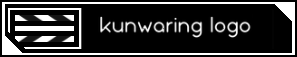

<nav class="navbar navbar-expand-lg navbar-light bg-light navBarStickToTop">

    

    <span class ="horizontalLeftMargin">

        <div class="btn-group me-2" role="group" aria-label="Main group">
            <button (click)="ShowListComponent_navBar(false)" 
            type="button" class="btn btn-primary btnWithBorder">
                Task List
            </button>
            <button *ngIf="!navBarState.showCreate && !navBarState.showEdit" 
            (click)="ShowCreateComponent_navBar()"
            type="button" class="btn btn-primary btnWithBorder">
                Create New Task
            </button>     
        </div>

        <div class="btn-group" role="group" aria-label="Optional group">
            <button (click)="OpenExportedGodot()"
            type="button" class="btn btn-danger btnWithBorder">
                Open non-Angular side experiment...?
            </button>
        </div>

    </span>
</nav> 
